Gradient Descent Methods
This tour explores the use of gradient descent method for unconstrained and constrained optimization of a smooth function
Contents
Installing toolboxes and setting up the path.
You need to download the following files: signal toolbox and general toolbox.
You need to unzip these toolboxes in your working directory, so that you have toolbox_signal and toolbox_general in your directory.
For Scilab user: you must replace the Matlab comment '%' by its Scilab counterpart '//'.
Recommandation: You should create a text file named for instance numericaltour.sce (in Scilab) or numericaltour.m (in Matlab) to write all the Scilab/Matlab command you want to execute. Then, simply run exec('numericaltour.sce'); (in Scilab) or numericaltour; (in Matlab) to run the commands.
Execute this line only if you are using Matlab.
getd = @(p)path(p,path); % scilab users must *not* execute this
Then you can add the toolboxes to the path.
getd('toolbox_signal/'); getd('toolbox_general/');
Gradient Descent for Unconstrained Problems
We consider the problem of finding a minimum of a function \(f\), hence solving \[ \umin{x \in \RR^d} f(x) \] where \(f : \RR^d \rightarrow \RR\) is a smooth function.
Note that the minimum is not necessarily unique. In the general case, \(f\) might exhibit local minima, in which case the proposed algorithms is not expected to find a global minimizer of the problem. In this tour, we restrict our attention to convex function, so that the methods will converge to a global minimizer.
The simplest method is the gradient descent, that computes \[ x^{(k+1)} = x^{(k)} - \tau_k \nabla f(x^{(k)}), \] where \(\tau_k>0\) is a step size, and \(\nabla f(x) \in \RR^d\) is the gradient of \(f\) at the point \(x\), and \(x^{(0)} \in \RR^d\) is any initial point.
In the convex case, if \(f\) is of class \(C^2\), in order to ensure convergence, the step size should satisfy \[ 0 < \tau_k < \frac{2}{ \sup_x \norm{Hf(x)} } \] where \(Hf(x) \in \RR^{d \times d}\) is the Hessian of \(f\) at \(x\) and \( \norm{\cdot} \) is the spectral operator norm (largest eigenvalue).
Gradient Descent in 2-D
We consider a simple problem, corresponding to the minimization of a 2-D quadratic form \[ f(x) = \frac{1}{2} \pa{ x_1^2 + \eta x_2^2, } \] where \( \eta>0 \) controls the anisotropy, and hence the difficulty, of the problem.
Anisotropy parameter \(\eta\).
eta = 10;
Function \(f\).
f = @(x)( x(1)^2 + eta*x(2)^2 ) /2;
Background image of the function.
t = linspace(-.7,.7,101); [u,v] = meshgrid(t,t); F = ( u.^2 + eta*v.^2 )/2 ;
Display the function as a 2-D image.
clf; hold on; imagesc(t,t,F); colormap jet(256); contour(t,t,F, 20, 'k'); axis off; axis equal;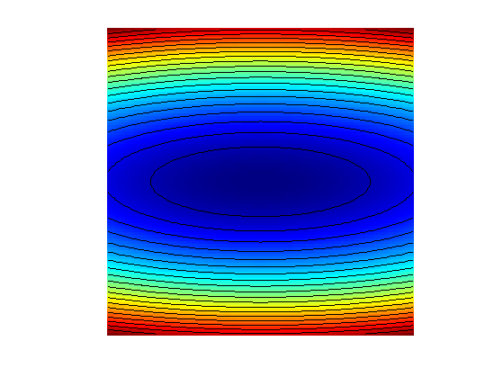
Gradient.
Gradf = @(x)[x(1); eta*x(2)];
The step size should satisfy \(\tau_k < 2/\eta\). We use here a constrant step size.
tau = 1.8/eta;
Exercice 1: (check the solution) Perform the gradient descent using a fixed step size \(\tau_k=\tau\). Display the decay of the energy \(f(x^{(k)})\) through the iteration. Save the iterates so that X(:,k) corresponds to \(x^{(k)}\).
exo1;

Display the iterations.
clf; hold on; imagesc(t,t,F); colormap jet(256); contour(t,t,F, 20, 'k'); h = plot(X(1,:), X(2,:), 'k.-'); set(h, 'LineWidth', 2); set(h, 'MarkerSize', 15); axis off; axis equal;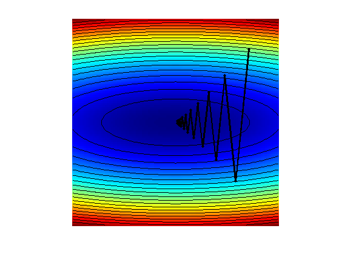
Exercice 2: (check the solution) Display the iteration for several different step sizes.
exo2;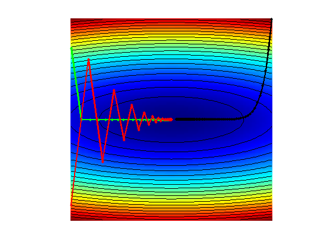
Gradient and Divergence of Images
Local differential operators like gradient, divergence and laplacian are the building blocks for variational image processing.
Load an image \(x_0 \in \RR^N\) of \(N=n \times n\) pixels.
n = 256;
x0 = rescale( load_image('lena',n) );
Display it.
clf; imageplot(x0);
For a continuous function \(g\), the gradient reads \[ \nabla g(s) = \pa{ \pd{g(s)}{s_1}, \pd{g(s)}{s_2} } \in \RR^2. \] (note that here, the variable \(s\) denotes the 2-D spacial position).
We discretize this differential operator on a discrete image \(x \in \RR^N\) using first order finite differences. \[ (\nabla x)_i = ( x_{i_1,i_2}-x_{i_1-1,i_2}, x_{i_1,i_2}-x_{i_1,i_2-1} ) \in \RR^2. \] Note that for simplity we use periodic boundary conditions.
Compute its gradient, using finite differences.
grad = @(x)cat(3, x-x([end 1:end-1],:), x-x(:,[end 1:end-1]));
One thus has \( \nabla : \RR^N \mapsto \RR^{N \times 2}. \)
v = grad(x0);
One can display each of its components.
clf; imageplot(v(:,:,1), 'd/dx', 1,2,1); imageplot(v(:,:,2), 'd/dy', 1,2,2);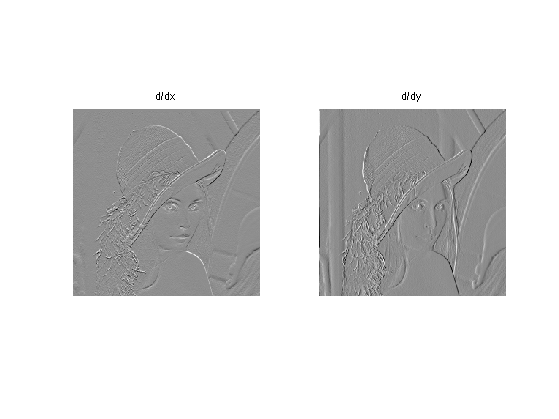
One can also display it using a color image.
clf; imageplot(v);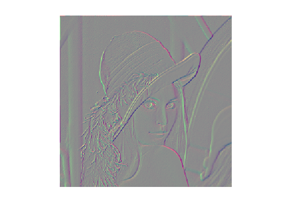
One can display its magnitude \(\norm{(\nabla x)_i}\), which is large near edges.
clf; imageplot( sqrt( sum3(v.^2,3) ) );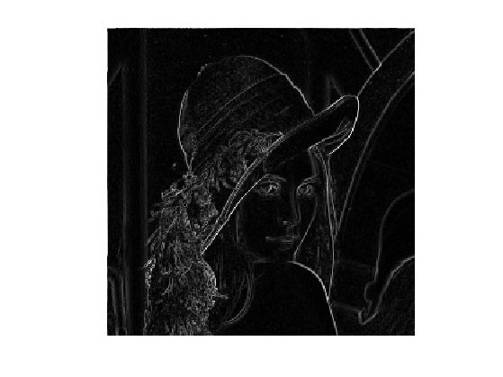
The divergence operator maps vector field to images. For continuous vector fields \(v(s) \in \RR^2\), it is defined as \[ \text{div}(v)(s) = \pd{v_1(s)}{s_1} + \pd{v_2(s)}{s_2} \in \RR. \] (note that here, the variable \(s\) denotes the 2-D spacial position). It is minus the adjoint of the gadient, i.e. \(\text{div} = - \nabla^*\).
It is discretized, for \(v=(v^1,v^2)\) as \[ \text{div}(v)_i = v^1_{i_1+1,i_2} - v^1_{i_1,i_2} + v^2_{i_1,i_2+1} - v^2_{i_1,i_2} . \]
div = @(v)v([2:end 1],:,1)-v(:,:,1) + v(:,[2:end 1],2)-v(:,:,2);
The Laplacian operatore is defined as \(\Delta=\text{div} \circ \nabla = -\nabla^* \circ \nabla\). It is thus a negative symmetric operator.
delta = @(x)div(grad(x));
Display \(\Delta x_0\).
clf; imageplot(delta(x0));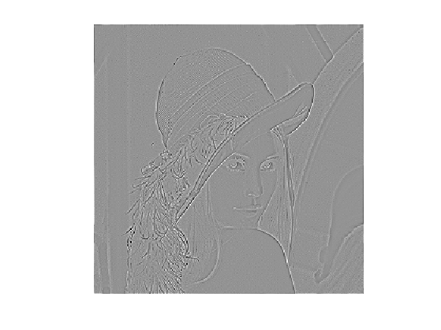
Check that the relation \( \norm{\nabla x} = - \dotp{\Delta x}{x}. \)
dotp = @(a,b)sum(a(:).*b(:));
fprintf('Should be 0: %.3i\n', dotp(grad(x0), grad(x0)) + dotp(delta(x0),x0) );
Should be 0: 000
Gradient Descent in Image Processing
We consider now the problem of denoising an image \(y \in \RR^d\) where \(d = n \times n\) is the number of pixels (\(n\) being the number of rows/columns in the image).
Add noise to the original image, to simulate a noisy image.
sigma = .1; y = x0 + randn(n)*sigma;
Display the noisy image \(y\).
clf; imageplot(clamp(y));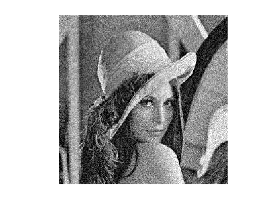
Denoising is obtained by minimizing the following functional \[ \umin{x \in \RR^d} f(x) = \frac{1}{2} \norm{y-x}^2 + \la J_\epsilon(x) \] where \(J_\epsilon(x)\) is a smoothed total variation of the image. \[ J_\epsilon(x) = \sum_i \norm{ (G x)_i }_{\epsilon} \] where \( (Gx)_i \in \RR^2 \) is an approximation of the gradient of \(x\) at pixel \(i\) and for \(u \in \RR^2\), we use the following smoothing of the \(L^2\) norm in \(\RR^2\) \[ \norm{u}_\epsilon = \sqrt{ \epsilon^2 + \norm{u}^2 }, \] for a small value of \(\epsilon>0\).
The gradient of the functional read \[ \nabla f(x) = x-y + \lambda \nabla J_\epsilon(x) \] where the gradient of the smoothed TV norm is \[ \nabla J_\epsilon(x)_i = G^*( u ) \qwhereq u_i = \frac{ (G x)_i }{\norm{ (G x)_i }_\epsilon} \] where \(G^*\) is the adjoint operator of \(G\) which corresponds to minus a discretized divergence.
Value for \(\lambda\).
lambda = .3/5;
Value for \(\epsilon\).
epsilon = 1e-3;
TV norm.
NormEps = @(u,epsilon)sqrt(epsilon^2 + sum(u.^2,3)); J = @(x,epsilon)sum(sum(NormEps(grad(x),epsilon)));
Function \(f\) to minimize.
f = @(y,x,epsilon)1/2*norm(x-y,'fro')^2 + lambda*J(x,epsilon);
Gradient of \(J_\epsilon\). Note that div implement \(-G^*\).
Normalize = @(u,epsilon)u./repmat(NormEps(u,epsilon), [1 1 2]); GradJ = @(x,epsilon)-div( Normalize(grad(x),epsilon) );
Gradient of the functional.
Gradf = @(y,x,epsilon)x-y+lambda*GradJ(x,epsilon);
The step size should satisfy \[ 0 < \tau_k < \frac{2}{ 1 + 4 \lambda / \epsilon }. \] Here we use a slightly larger step size, which still work in practice.
tau = 1.8/( 1 + lambda*8/epsilon ); tau = tau*4;
Exercice 3: (check the solution) Implement the gradient descent. Monitor the decay of \(f\) through the iterations.
exo3;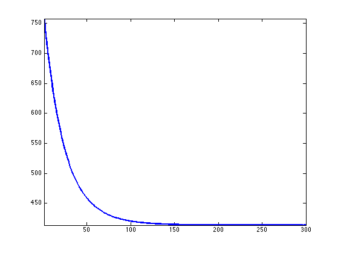
Display the resulting denoised image.
clf; imageplot(clamp(x));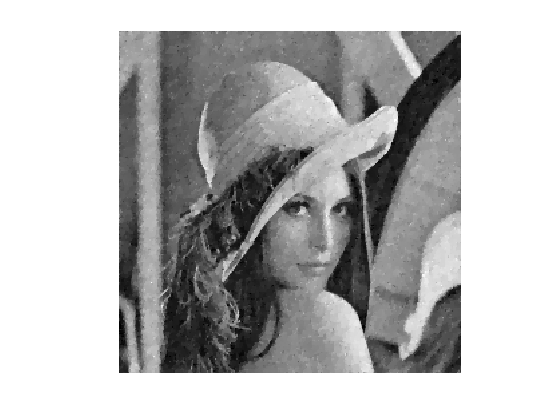
Constrained Optimization Using Projected Gradient Descent
We consider a linear imaging operator \(\Phi : x \mapsto \Phi(x)\) that maps high resolution images to low dimensional observations. Here we consider a pixel masking operator, that is diagonal over the spacial domain.
To emphasis the effect of the TV functional, we use a simple geometric image.
n = 64;
name = 'square';
x0 = load_image(name,n);
We consider here the inpainting problem. This simply corresponds to a masking operator. Here we remove the central part of the image.
a = 4; Lambda = ones(n); Lambda(end/2-a:end/2+a,:) = 0;
Masking operator \( \Phi \). Note that it is symmetric, i.e. \(\Phi^*=\Phi\)
Phi = @(x)x.*Lambda; PhiS = @(x)Phi(x);
Noiseless observations \(y=\Phi x_0\).
y = Phi(x0);
Display.
clf; imageplot(x0, 'Original', 1,2,1); imageplot(y, 'Damaged', 1,2,2);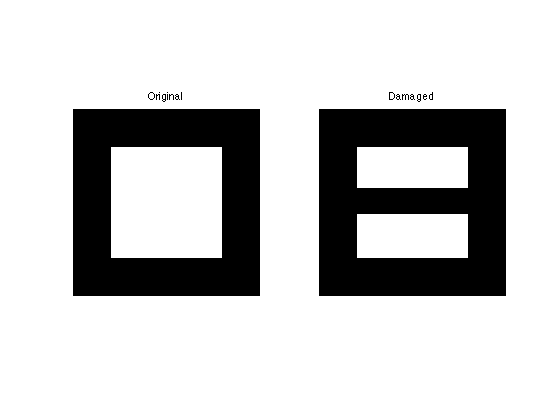
We want to solve the noiseless inverse problem \(y=\Phi f\) using a total variation regularization: \[ \umin{ y=\Phi x } J_\epsilon(x). \] We use the following projected gradient descent \[ x^{(k+1)} = \text{Proj}_{\Hh}( x^{(k)} - \tau_k \nabla J_{\epsilon}(x^{(k)}) ) \] where \(\text{Proj}_{\Hh}\) is the orthogonal projection on the set of linear constraint \(\Phi x = y\), and is easy to compute for inpainting
ProjH = @(x,y) x + PhiS( y - Phi(x) );
Exercice 4: (check the solution) Display the evolution of the inpainting process.
exo4;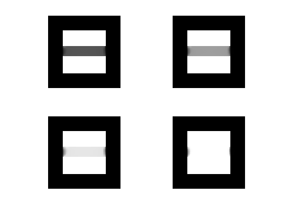
Exercice 5: (check the solution) Try with several values of \(\epsilon\).
exo5;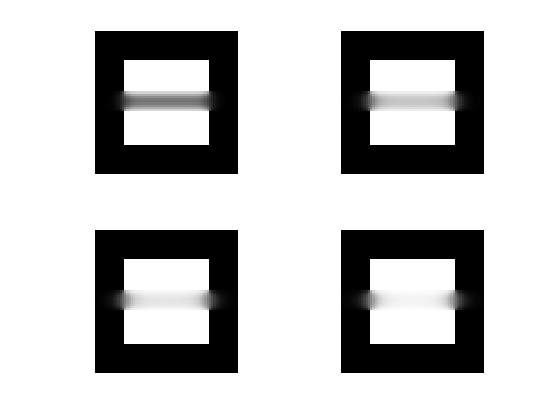